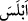
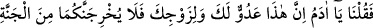
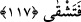

Allah Teâlâ meleklere: “Ben yeryüzünde bir halife yaratacağım.” deyince melekler:
“Orada bozgunculuk yapacak, kan dökecek birisini mi yaratacaksın? Oysa biz seni
överek tesbih ediyor ve seni takdis ediyoruz.” dediler.” (el-Bakara, 2/30)
Meleklerin bu ifâdesi, bir nevi Allâh’a îtiraz, Âdem’e karşı bir tür gıybet ve
kendilerinin ondan üstün olduklarını ortaya koymaktı. Allah, onlara: “Ben sizin
bilmediklerinizi bilirim.” (el-Bakara, 2/30) diye cevap verdi. Yani, benim ona eşyanın
isimlerini öğrettiğimi ve onu yeryüzünde Allâh’ın halifesi olma istîdâdında yarattığımı,
siz bilemezsiniz. İşte bu vasıflarıyla o, sizden üstündür. Bana olan îtirazınıza ve onu
gıybet etmenize istiğfar ve keffâret olsun diye haydi Âdem’e secde edin. Ona secde
etmekle mütevâzı olduğunuzu gösterin.
Bunun üzerine melekler, hatâlarını ikrar ve îtiraf ettiler. Tevbe ederek Allâh’ın
hükmüne teslim oldular ve Hz. Âdem’e secde ettiler. Ancak İblis, îtiraz, gıybet ve
kendini beğenme günahında ısrar etti. Allâh’ın hükmüne de teslim olmadı. Îtiraz, gıybet
ve böbürlenmeyi artırarak: “Ben ondan hayırlıyım. Beni ateşten yarattın, onu
çamurdan.” (el-A‘râf, 7/12) dedi. Âdem (a.s.)’a secde etmekten yüz çevirdi. Nitekim
et-Te’vîlâtü’n-Necmiyye’de böyle geçmektedir.
“Onlar” melekler, Rablerinin emrine hürmeten “hemen secde ettiler; yalnız İblis
hâriç. O, diretti.” O secde etmedi, kibirlenmeyi bırakmadı ve tevâzu göstermedi.
Mesnevî’de der ki:
Âdem’i bedenden ibaret gören ondan kaçtı, ona secde etmedi.
Onu nur olarak gören, karşısında eğildi, secde etti.
İblis, kelimesinin ümitsizliğe kapıldı, şaşırdı anlamındaki “
” kelimesinden olduğu
söylenir. “İblîs” ümitsizliğe düşen, şaşıran demektir. Ya da o el-Kamûs’ta denildiği gibi
Arapça olmayan bir isimdir.
117. Bunun üzerine şöyle dedik: “Ey Âdem! Bu, hem senin için hem de eşin için
büyük bir düşmandır. Sakın sizi cennetten çıkarmasın; sonra yorulur, sıkıntı
çekersin!
Burada sanki “İblis’e ne oldu ki secde etmedi?” diye sorulmuş ve cevap olarak şöyle
denilmiştir:
“Bunun üzerine şöyle dedik:” Yani bunlardan sonra nasihat olmak üzere “Ey Âdem!
Bu,” ne yaptığını gördüğün hakîr İblis, “hem senin için hem de eşin” Havva “için
büyük bir düşmandır.”